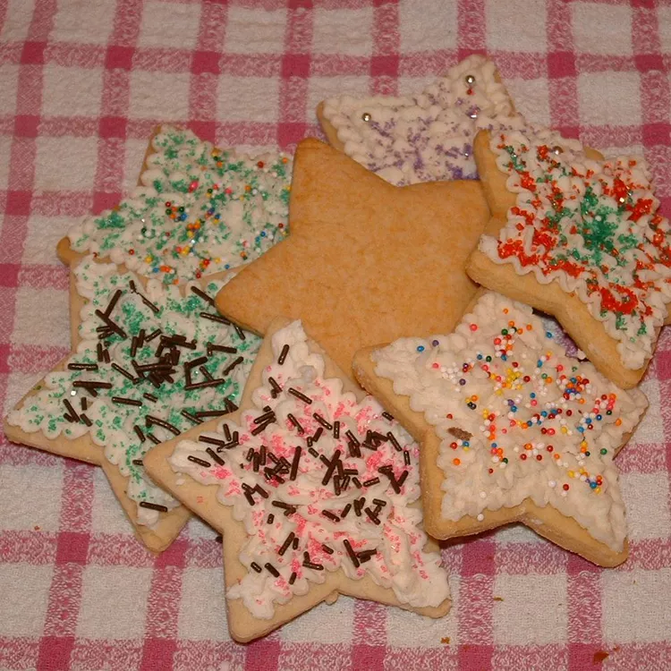

Simple Sugar Cookies

Description
When you want cookies, you want cookies. If you're like me and love all types of cookies
then this basic sugar cookie recipe is perfect. You can top them with any kind of frosting
that you please or even something different like honey or peanut butter. This recipe will make
roughly 18 cookies depending on how large they are. Super yummy and easy!
Ingredients
Cookies
- ⅓ cup white sugar
- ⅓ cup shortening
- 1 egg
- 2/3 cup honey
- 1 teaspoon lemon extract
- 2 3/4 cups all purpose flour/li>
- 1 teaspoon baking soda
- 1/2 teaspoon salt
These cookies are so good you won't stop making them. The steps are:
- Preheat oven to 375 degrees F (190 degrees C). Lightly grease cookie sheets.
- Mix sugar, shortening, egg, honey, and lemon extract.
- Stir in remaining ingredients and mix well.
- Roll dough 1/4 inch thick.
- Use cookie cutters to cut into desired shapes.
- Place 1 inch apart on lightly greased cookie sheet.
- Bake 7 to 8 minutes or until no indentation remains when touched.
- Cool and decorate!
Link to original recipe